When you complete this learning material, you will be able to:
Discuss condenser principles, performance, operation and auxiliaries.
You will specifically be able to complete the following tasks:
Describe the principles and design of jet, air cooled, and surface condensers.
The cycle of operations through which the working fluid passes in a steam power plant is compared for performance against the ideal Rankine Cycle. This cycle consists of four main operations: heat supply (at constant pressure), expansion through the prime mover, heat rejection (at constant pressure), and recompression.
Fig. 1 shows a Temperature-Entropy diagram for steam. The four operations are:
Heat rejection is the operation which will be discussed in this lecture. The Rankine Cycle demands only that this operation is carried out at constant pressure. This can be fulfilled with the prime mover exhausting to atmosphere and the boiler water drawn from some outside source.
There are two major disadvantages to this scheme. One is that all of the feedwater in the system is blown out to atmosphere, necessitating 100% makeup. The other is that backpressure on the prime mover limits the expansion of the steam and consequently the work which could be realized from the engine. Expansion of the steam to a lower pressure (below atmospheric) coupled with recovery of the condensate are essential to the economy of a steam plant.
The condenser and its auxiliary equipment are used for efficient heat rejection. The steam leaving the exhaust of the prime mover, turbine or engine, is condensed and the condensate collected. The working fluid goes through this change of phase (from vapour to liquid) so that it can be pumped back to boiler pressure. Latent heat in the steam is lost in the process. This is the largest single loss in the complete cycle of a steam power plant.
Fig. 1 shows this loss as the area on the diagram beneath the heat-rejection line \( E - A \) . This area represents the heat taken from the steam as it passes through the condenser and is rejected to the cooling water.
![Temperature-Entropy Diagram showing a steam cycle without feed heating. The y-axis is Temperature in °C, ranging from -273 to 500. The x-axis is Entropy. The diagram shows a saturation dome with a vapor quality line. Point A is at 0°C on the liquid line. Point B is at 280°C on the liquid line. Point C is at 280°C on the vapor line. Point D is at 500°C on the vapor line. Point E is at 0°C on the vapor line. Point F is at -273°C on the vapor line. Point G is at -273°C on the liquid line. The area under the curve from A to B to C to D is shaded with diagonal lines and labeled 'Heat Available For Work'. The area under the curve from A to G to F to E is shaded with dots and labeled 'Heat Lost in Condenser'.](5d92d5c9cc01a262b0389d138caa9aea_img.jpg)
Initial Steam
Conditions 7000 kPa 500°C
Figure 1
Temperature-Entropy Diagram showing
Steam Cycle without Feed Heating
Fig. 2 shows these heat losses in a block diagram. The left-hand block, representing the total heat input to the plant, is the heat released by the fuel burned. The right-hand blocks show the disposition of this heat in the power plant, the effective portion being 30%. This is a measure of the plant overall thermal efficiency. The heat loss in the condenser is the greatest single loss in the operation. A plant which puts this rejected heat to use, in a process operation for example, can achieve an overall thermal efficiency in excess of 30%.
![Heat Balance Diagram showing the distribution of heat input into various losses and heat output. The diagram is a vertical bar chart from 0 to 100 percent. The top portion is labeled 'Heat Input' and the bottom portion is labeled 'Heat Output'. The 'Heat Input' is divided into several loss categories: Radiation & Unaccounted, Combustible in Ash, Dry Chimney Gases, Moisture in Fuel, Combustion of Hydrogen, Condenser Loss, and Generator Loss Etc. The 'Heat Output' is the remaining portion, ending at the 30% mark.](de6e8b740c69dac308cce9edfec3eff4_img.jpg)
| Loss Category | Percentage |
|---|---|
| Radiation & Unaccounted | ~2% |
| Combustible in Ash | ~1% |
| Dry Chimney Gases | ~2% |
| Moisture in Fuel | ~1% |
| Combustion of Hydrogen | ~4% |
| Condenser Loss | ~40% |
| Generator Loss Etc. | ~2% |
| Heat Output | 30% |
Figure 2
Heat Balance Diagram
Condensation of the steam in a steam plant cycle takes place at the lowest practicable absolute pressure to enable the prime mover to extract the maximum amount of work from each kg of steam before it is condensed.
Therefore, the condenser must be capable of maintaining a vacuum in the region of 710 mm mercury or 6.9 kPa abs while handling a full load of exhaust steam flow from the prime mover. It does this most efficiently if the latent heat only is removed and none of the sensible heat, i.e. the condensate temperature should be as near as possible to the entering steam temperature.
The following comparison shows how much work the expansion of steam at low pressures does. When steam expands from 1000 kPa to atmospheric pressure, the amount of work done is 102.6 kJ/kg. When the steam is expanded from atmospheric pressure to 7.5 kPa vacuum, the amount of work done is 100.7 kJ/kg.
Other purposes of the condenser are:
There are two main types of condensers:
Contact condensers can be divided into two main groups:
Jet condensers bring the exhaust steam and the cooling water together which condenses the steam. Condensers operating with direct contact between steam and water may use either a pump to remove the water from the condenser body, called low-level jet condensers, or the body may be set at sufficient height above the hotwell that the water flows out by gravity, called barometric condensers.
The necessary length of tailpipe for a barometric condenser depends upon atmospheric conditions and the vacuum carried in the condenser. The average length of the tailpipe is about 10.5 m. Fig. 3 shows a basic barometric condenser. Cooling water flows through jets from the cooling water inlet and falls at right angles to the steam inlet.
Contact between cooling water and steam causes the steam to condense and the condensate, together with any air or noncondensable gases, falls with the cooling water through the tailpipe to the hotwell. Boiler feedwater and cooling water are withdrawn from the hotwell. This type of jet condenser is called a parallel flow condenser because the air and other gases pass through in the same direction as the condensate.
When starting up the plant, the cooling water pump lifts the water from the hotwell up to the condenser inlet. As the vacuum is built up, it assists in drawing the water into the condensing space.
The maximum useful injection water lift that can be expected depends upon the vacuum in the condenser and the barometric pressure of the surrounding atmosphere. It is about 10.5 m for an installation at sea level. The tailpipe dimensions are chosen so that the water quantity flowing keeps the tailpipe sufficiently filled to maintain a seal on the condensing space at all times.
![Diagram of an Ejector-Jet Barometric Condenser. The diagram shows a vertical assembly. At the top, there is a 'Steam Inlet' on the left and a 'Cooling Water Inlet' on the right. The steam inlet leads into a large, conical chamber. The cooling water inlet leads into a series of small discs within the chamber. A long, narrow 'Tail Pipe' extends from the bottom of the chamber. At the bottom of the tail pipe, there is a 'Hotwell' section. A 'Cooling Water Outlet' is shown on the right side, with water flowing out from the hotwell section.](1956f44611abd5c3c41049836aa78ad8_img.jpg)
Figure 3
Ejector-Jet Barometric Condenser
Fig. 4 illustrates the flow diagram of a disk-flow condenser and a two-stage condensing ejector the barometric condenser. The tailpipe carries the cooling water and the condensate as before but steam ejectors draw the air and noncondensable gases from the top of the condensing space. Because of the opposition in flow directions, this type of jet condenser is called a counterflow condenser. This condenser is strictly a contact condenser and not a jet, because the cooling water flow in this case is carried over a series of discs in its fall toward the tailpipe.
Note that the two-stage ejector handling the air and gases includes an auxiliary condenser of the same type as the main condenser. The purpose of the auxiliary condenser is to remove entrained water vapour. As with the barometric condenser shown in Fig. 3, no pump is required to move the water from the condensing space to the hotwell.
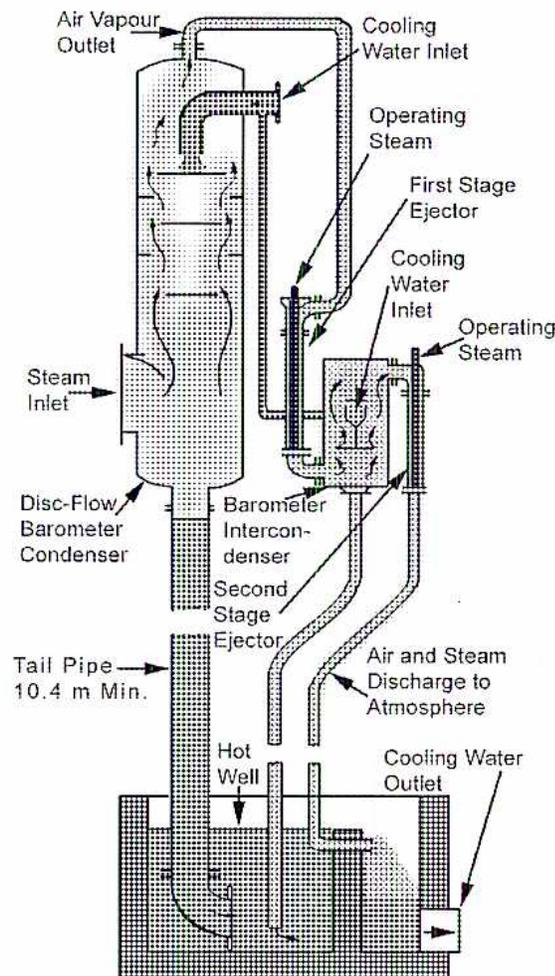
The diagram illustrates a vertical assembly of a Disk-Flow Condenser and a Two-Stage Condensing Ejector. At the top, the 'Air Vapour Outlet' exits from the condenser body. 'Cooling Water Inlet' pipes enter the condenser and the first stage ejector. 'Operating Steam' is supplied to both the condenser and the first stage ejector. The 'Steam Inlet' enters the main condenser body. The condenser is labeled 'Disk-Flow Barometer Condenser'. Below it is the 'Barometer Intercondenser', which receives input from the first stage. The 'First Stage Ejector' is positioned between the two condensers. Below the second condenser is the 'Second Stage Ejector', which also receives 'Operating Steam' and 'Cooling Water Inlet'. The 'Tail Pipe' (labeled '10.4 m Min.') extends from the bottom of the second stage ejector. 'Air and Steam Discharge to Atmosphere' is shown exiting from the second stage. The bottom section contains a 'Hot Well' and a 'Cooling Water Outlet'.
Figure 4
Disk-Flow Condenser and Two-Stage Condensing Ejector
Fig. 5 shows a low-level jet condenser. The main difference between these and the barometric type is that here the water is removed from the condenser body by a pump. This type of condenser, used in a geothermal power plant, is suitable because the cooling water can be mixed with the steam condensate, before it is pumped back into the geothermal rock formation for reheating.
Low-level jet condensers are fitted with an automatic vacuum breaker to protect the turbine against flooding in the event of stoppage or failure of the water pump. The air and other noncondensable gases are removed from the top of the condenser space, using the counterflow principle with a two-stage steam ejector and an interstage condenser.
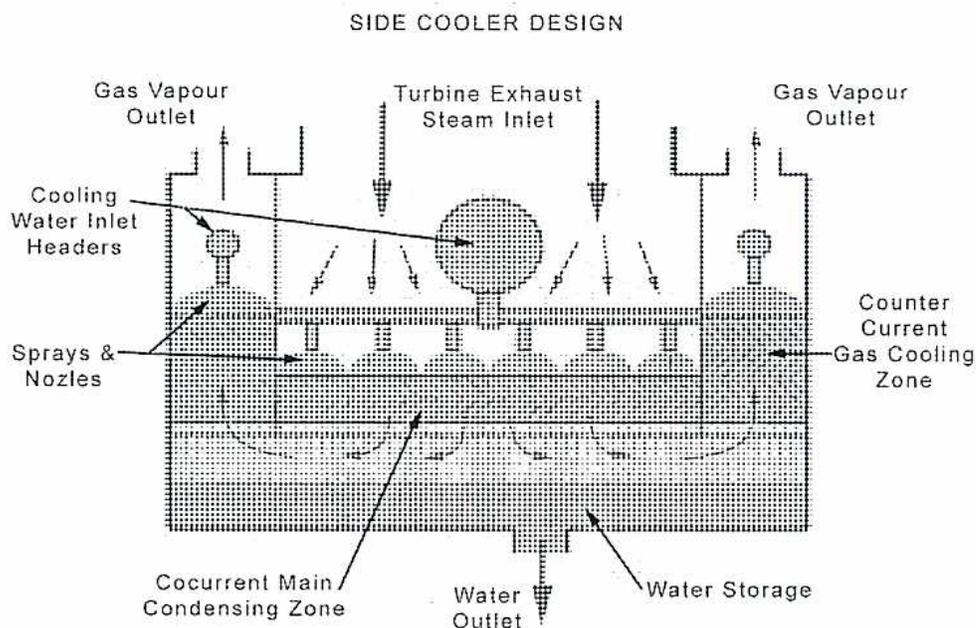
SIDE COOLER DESIGN
The diagram illustrates the internal structure of a low-level jet condenser. At the top center, the 'Turbine Exhaust Steam Inlet' enters the chamber. On either side, 'Gas Vapour Outlet' pipes extend upwards. 'Cooling Water Inlet Headers' are positioned on the left and right sides, feeding into a series of 'Sprays & Nozzles' that direct cooling water into the chamber. The chamber is divided into two primary zones: the 'Cocurrent Main Condensing Zone' at the bottom and the 'Counter Current Gas Cooling Zone' above it. At the bottom center, a 'Water Outlet' pipe leads to a 'Water Storage' tank.
Figure 5
Low-Level Jet Condenser
Advantages of the jet condenser are:
Disadvantages of jet condensers are:
Air-cooled steam condensers can be used to replace both a steam condenser and a cooling tower in the power plant cycle. Air-cooled condensers accomplish the following functions:
No evaporation is used to cool the coils of an air cooled condenser. The heat is transferred in the form of sensible heat to the ambient air. The air flow may be natural draft but most are mechanical draft. Air cooled steam condensers are air cooled heat exchangers. The heat transfer surface area is increased by using finned tubes. The tubes and headers are usually arranged in an A-frame design, as shown in Fig. 6. In this design steam enters the top header and flows downward through the finned tubes. Condensate flows down the tubes by gravity and collects in the bottom header and drain pot.
The vacuum system is used to remove noncondensable gases. The A-frame design is the most often used arrangement of air cooled steam condensers. The other types include coolers with horizontal and vertical bundles.
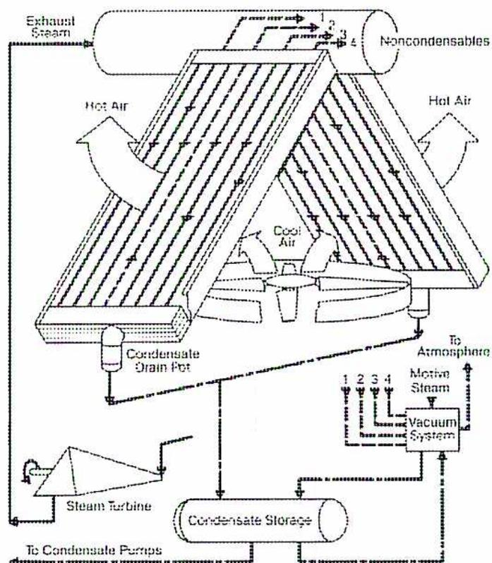
The diagram illustrates the components and flow of an air-cooled steam condenser system. At the top, 'Exhaust Steam' enters a header. From this header, four tubes (labeled 1, 2, 3, 4) descend through an A-frame structure. 'Noncondensables' are shown exiting from the top header. 'Hot Air' is shown entering from the sides and exiting from the top, while 'Cool Air' is shown entering from the bottom. The tubes collect in a bottom header, which is connected to a 'Condensate Drain Pot'. From the drain pot, the condensate flows to a 'Steam Turbine'. The turbine's exhaust is connected to a 'Condensate Storage' tank. From this tank, the condensate is sent 'To Condensate Pumps'. A 'Vacuum System' is connected to the bottom header and the condensate storage tank. The vacuum system has four outlets (labeled 1, 2, 3, 4) for 'Motive Steam' and one outlet 'To Atmosphere'.
Figure 6
Air-cooled Steam Condenser
Air-cooled surface condensers have been installed in power plants over 350 megawatts in North America and even larger plants internationally. They are often used when an adequate supply of cooling water is not available. The major advantages of air-cooled condensers are:
The main disadvantage is the higher exhaust pressure for the turbine. The minimum temperature is higher with air-cooled condensers resulting in higher vacuum readings. The higher vacuum reduces the turbine efficiency. In cold climates, special provisions must be made in the design of air-cooled condenser to avoid freezing of the condensate in the tubes and headers. These provisions include dampers, variable speed fans and added instrumentation.
A surface condenser consists of a nest of tubes supported between tube plates contained in a shell with waterboxes attached at each end. The steam to be condensed flows over the surface of the tubes and the cooling water, through the tubes.
Surface condensers use air as the cooling medium in areas where supplies of cooling water are very limited. These condensers may be straight dry air-cooled or may use air blown over the outside of the condensing tubes together with a trickle of water. This is evaporative cooling. In the latter case, the evaporation of the water causes the cooling air to approach its wet bulb temperature instead of its dry bulb temperature as in the dry air-cooled type.
Evaporative cooling condensers are rarely used because the air-to-metal heat transfer rate is much lower than the steam-to-metal or water-to-metal rate. A cooling tower used in conjunction with a normal water-cooled surface condenser gives better performance and uses a minimum of water.
Turbines, used to generate electricity, have water-cooled surface condensers positioned beneath the turbine exhaust branch. Fig. 7 shows the operating floor of a power plant. The condenser is located on the level below the machine, directly below the low pressure casings.
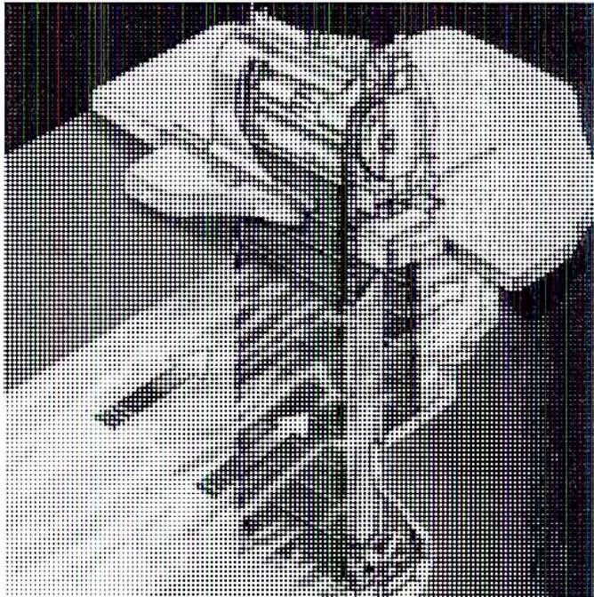
Figure 7
Turbine Generator Installation
The cooling water flow may be single pass (once through) or two pass. The steam flow may be from top to bottom (down flow) or radially towards the centre (central flow). Fig. 8 shows an Elliot Company condenser operating on the down flow principle.
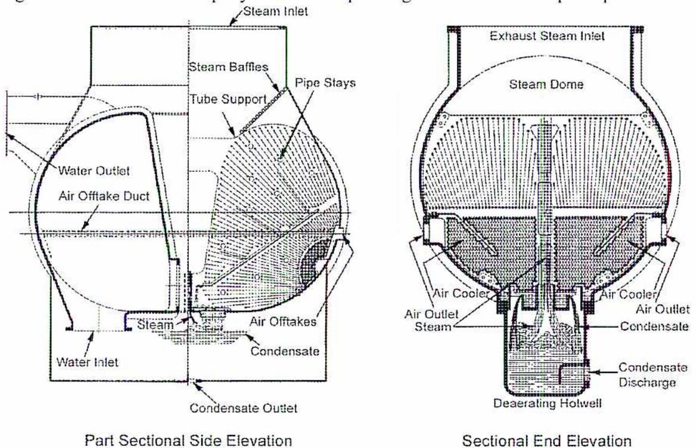
Part Sectional Side Elevation
Sectional End Elevation
Figure 8
Down Flow Condenser
Fig. 9 shows a two-pass central flow A.E.I. condenser.
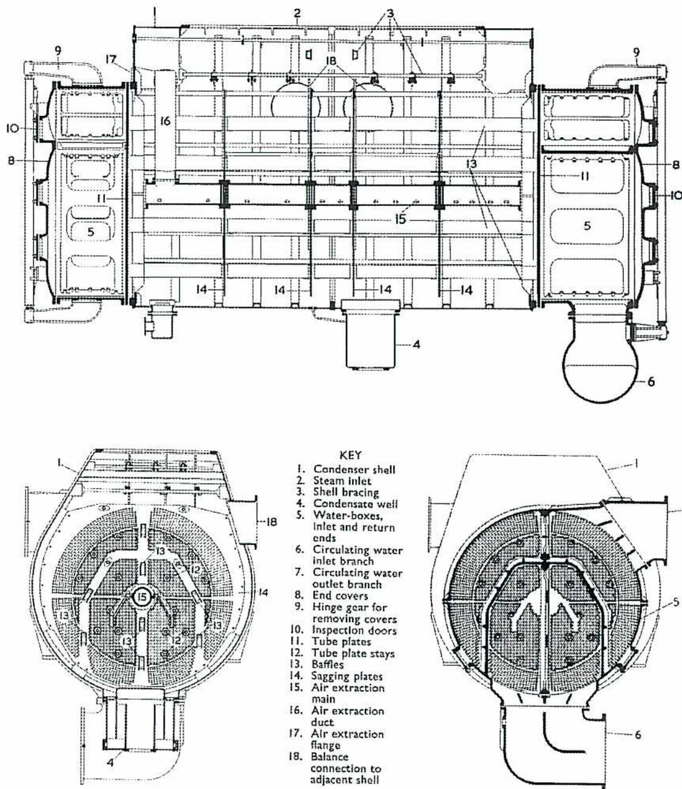
KEY
| 1. Condenser shell | 10. Inspection doors |
| 2. Steam inlet | 11. Tube plates |
| 3. Shell bracing | 12. Tube plate stays |
| 4. Condensate well | 13. Baffles |
| 5. Water-boxes, inlet and return ends | 14. Sagging plates |
| 6. Circulating water inlet branch | 15. Air extraction main |
| 7. Circulating water outlet branch | 16. Air extraction duct |
| 8. End covers | 17. Air extraction flange |
| 9. Hinge gear for removing covers | 18. Balance connection to adjacent shell |
Figure 9
Central Flow A.E.I. Condenser
The earlier designs of surface condensers used the maximum number of tubes pitched evenly over the whole of the available tube plate surface and often had a condensate temperature of 5 to 8°C below that of the incoming exhaust steam. This is called condensate sub-cooling (or undercooling).
A regenerative condenser uses wide tube spacing and leaves open spaces or steam lanes to allow the entering steam to penetrate through the tube nest and come into contact with the condensate falling from the upper tubes. The condensate and exhaust steam are maintained at an equal temperature. In some cases the condensate temperature is \( \frac{1}{2} \) to 1° above the vacuum temperature. This is caused by the recovery of exhaust steam velocity energy as heat in the condensate.
The air extraction equipment may be arranged to draw from beneath baffles near the bottom of the condenser in the down flow type which is the most common. Alternatively, the air extraction may be from the centre of the tube nest in a central flow type.
Air extraction takes place from the coolest area in the condenser, i.e. in the region of the inlet cooling water. The advantage is that the air is at its minimum specific volume and is most efficiently handled by ejectors. The purpose of the baffles is to prevent the steam from coming into contact with the air, thus keeping the air as cool as possible.
Fig. 10 shows a Wheeler Company condenser tube plate design illustrating the trend toward regenerative design. View (a) shows the earlier design with evenly spaced tubing over the whole of the tube plate.
View (b), (c) and (d) show the provision of open steam lanes, steam space between shell and tube banks, and graduated tube spacing. Also take note of the open tube spacing at the steam inlet where the steam volume is greatest, and that the tubes taper to closer spacing as they approach the air extraction. This design minimizes the pressure drop from top to bottom of the condenser and maintains the condensate temperature as high as possible.
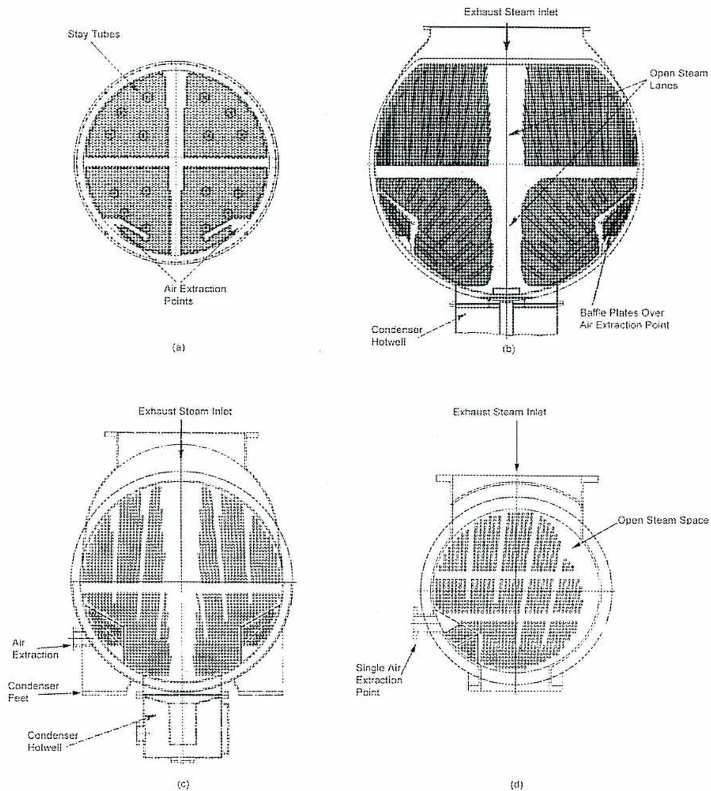
(a)
Stay Tubes
Air Extraction Points
(b)
Exhaust Steam Inlet
Open Steam Lanes
Baffle Plates Over Air Extraction Point
Condenser Hotwell
(c)
Exhaust Steam Inlet
Air Extraction
Condenser Feet
Condenser Hotwell
(d)
Exhaust Steam Inlet
Open Steam Space
Single Air Extraction Point
Figure 10
Condenser Tube Plate Designs
Condenser tubes are straight and generally have 19 mm, 22 mm or 25 mm outside diameter though occasionally 16 mm tubes have been used. The smaller diameter tube gives slightly more surface area, but is subject to increased flow restrictions and requires more circulating water pump power. The thickness is fairly standard at 18 B.W.G. (Birmingham Wire Gauge). The dimensions generally work out so as to make the tube length roughly 1.5 to 2.5 times the diameter of the tube plate.
The material used for the tubes must be a good conductor of heat and resistant to corrosion. The material used depends mainly upon the corrosive properties of the cooling water. Admiralty metal which is 70/30 brass with some addition of tin and aluminium brass are generally suitable for fresh or sea water. Where the water is particularly corrosive, cupro-nickel alloys are used though these materials have a somewhat lower thermal conductivity and consequently their use necessitates a greater condenser surface for a given heat transfer. Stainless steel is another material commonly used for condenser tubes because of its corrosion resistance. Titanium is also used for seawater applications.
The method of attachment of the tubes to the tube plate is very important. The joint between the two prevents the cooling water from being drawn into the steam space and thus contaminating the condensate. Because the tubes are brass, they expand more than the steel shell when the condenser warms up under working conditions, so allowance for this movement is made at the tube plate. The method used allows the tube to slide through the tube plate as it expands. Various methods, used to attach the tubes to the tube plate, are shown in Fig. 11.
View (a) shows the earliest method. It was made up of a packing of corset lace (or condenser cord) soaked in oil (boiled linseed), with ferrules at each end, the tube being butted up to the inlet ferrule shoulder and expansion allowance given at the outlet end.
View (b) shows the “Crane” type of packing, again ferruled at each end. The packing consists of fibre rings and flexible metallic rings fitted alternately, the ferrule screwed hard in against the rings.
View (c) shows a tube ferruled at the inlet end only, with a full box of Crane type packing at the outlet end. In this case the tube is held in place by the cone-shaped rings in the inlet end packing; the outlet packing is caulked into place.
View (d) shows the inlet end is expanded and belled; the outlet end can be ferruled as shown or fitted with caulked-in packing as in (c).
View (e) shows both ends expanded into place. In this case special condenser construction is necessary to permit the displacement of one tube plate to accommodate differences in expansion.
![Figure 11: Methods of Securing Condensers Tubes. The figure contains five cross-sectional diagrams labeled (a) through (e). (a) shows a tube with 'Water Flow' indicated by an arrow, secured by 'Condenser Tube Plates' and 'Tube Expansion Allowance'. (b) shows 'Condenser Tubes' secured by 'Ferrules'. (c) shows 'Tube Packing' between the tube and the plate. (d) shows a tube secured by a 'Ferrule' at one end and 'Expanded and Beaded' at the other. (e) shows a tube secured by 'Ferrules' at one end and 'Expanded' at the other. Vertical labels 'INLET TUBE ENDS' and 'OUTLET TUBE ENDS' are placed on the left and right sides of the diagrams respectively.](7b1cea8c45c49887a750926f2135fa84_img.jpg)
Figure 11
Methods of Securing Condensers Tubes
Condenser tube plates are usually admiralty metal or a similar non-ferrous alloy although mild steel is also common. Collar bolts secure the tube plates to the shell, Fig. 12, so that the waterboxes may be removed without disturbing the joint between the tube plate and shell. The holes for the tube ends are drilled and reamed or drilled and tapped depending upon the method of tube fixing. The pitching of the holes is chosen so that steam has access to all portions of the tube nest with a minimum pressure difference across the nest.
Steady plates, drilled to the same pattern as the tube plates, are placed in the steam space to support the tubes when the distance between tube plates is considerable. They are designed to support the tubes to avoid excessive sagging and also to dampen out any vibration in the tubes. They are usually made of mild steel. As a further protection, the top row of tubes is often replaced by a row of steel or iron rods. Their purpose is to prevent tube damage from pieces of turbine blading or any foreign material carried through the turbine exhaust.
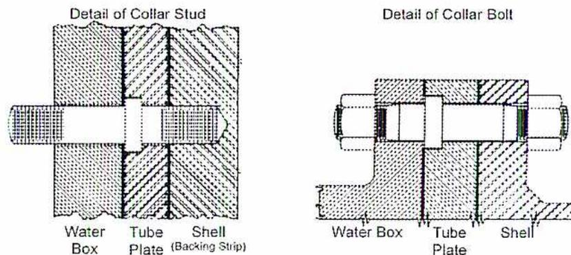
Figure 12
Attachment of Tube Plates and Waterboxes
Shells are welded steel construction, generally stiffened by external ribs or internal braces. The larger sizes are divided by circumferential joints for ease of transportation. The shells are fitted with feet to carry the mass of the condenser. In the case of smaller machines, these feet are secured to the engine foundation. In the larger machines, the condenser is bolted to the exhaust branch and supported on springs.
The shell may also be fitted with an expansion joint to allow longitudinal movement. This is done when the design calls for the tubes to be expanded into their tube sheets at both ends and relative movement between shell and tubes must be accommodated. Shells are made to accommodate the turbine exhausts and may be made in two separate sections where the turbine has two exhausts, as with a double flow LP cylinder. In many cases, the shell is divided to allow the circulating water to be shut off from one-half of the shell for cleaning purposes while the machine is still running on a reduced load.
Describe the purpose, principle and design of surface condenser support and expansion systems.
The purpose of expansion joints and support springs is to allow relative movement between the turbine exhaust flange and the condenser. In the smaller designs, the condenser feet are bolted rigidly to the foundations and an expansion joint such as a corrugated bellows piece is fitted between the engine exhaust flange and the condenser inlet flange.
Fig. 13 shows C.H. Wheeler joints used for this purpose. For larger designs, the condenser is bolted to the turbine exhaust flange and supported on springs, which are proportioned to just support the mass of the condenser when operating full of cooling water. This relieves the turbine exhaust of any thrust.
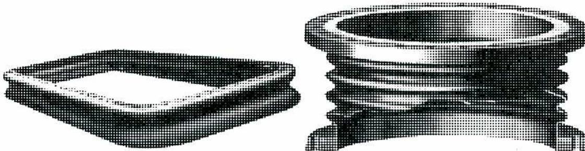
Figure 13
C. H. Wheeler Corrugated Expansion Joint
Fig. 14 illustrates condenser spring supports fitted to a condenser. The bolts F are secured to the machine foundation and the condenser feet rest on the keeps E. The condenser inlet flange is bolted directly to the turbine exhaust flange, and consequently the joining of these flanges becomes an essential part of lining up the machine during the assembly stages.
The spring settings are done with the condenser in working condition. If the steam space has to be filled with water at any time, say for the purpose of testing the tubes and tube plate for leakage, the jacking screws C are run up to the condenser feet to provide a solid support for the extra mass.
![Figure 14: Condenser Spring Supports. The diagram shows two views of a condenser support assembly. On the left is an 'Elevation' view showing three vertical spring assemblies. Each assembly consists of a central rod (A) with a large helical spring (B) surrounding it. The top of each rod is secured with a nut (C) and a keep (E). The bottom of each rod is secured with a nut (A) and a keep (B). On the right is a 'Section On A-A' view, showing a cross-section of the assembly. It details the internal components: the bottom section of the check bolt (D), the centre keep (E), and the foundation bolt (F). A legend at the top right identifies the components: A - Keep for Spring, B - Bolts for Keep, C - Jacking Screw Condenser Foot, D - Bottom Section of Check Bolt, E - Centre Keep, F - Foundation Bolt.](cd91fd97c6e4da454b42f4fde13f7e44_img.jpg)
Figure 14
Condenser Spring Supports
Fig. 15 shows details of a tube plate stay rod fitted to a condenser for the purpose of supporting the tube plate against water pressure and vacuum. This bronze stay is fitted between the tube plate and the water-box cover. The number fitted is proportional to the circulating water pressure involved. An alternative design is a steel rod passing through the steam space and connected to both tube plates.
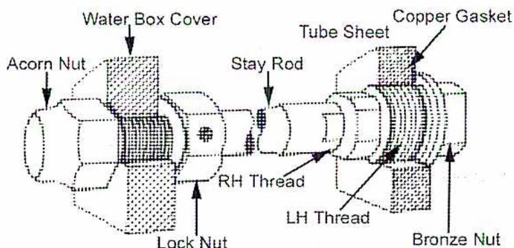
Figure 15
Tube Plate Stay Rod
In Objective 1, the method used to allow for the expansion of the condenser tubes was discussed. For Fig. 11 diagram (e) both ends of the tubes are expanded into place. When this design is used, a shell expansion joint, Fig. 16, allows for the differential expansion between the tubes and the shell.
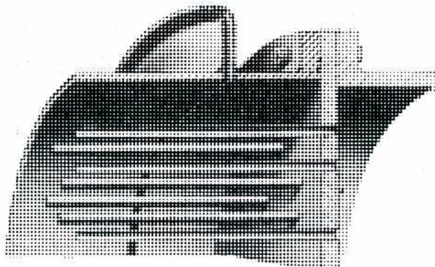
The image shows a 3D perspective view of a shell expansion joint. It consists of a cylindrical shell with a corrugated metal bellows section in the middle. The bellows section is designed to allow for axial expansion and contraction of the shell. The shell has a flange at the top and a flange at the bottom. The bellows section is located between the two flanges. The shell is shown in a cutaway view, revealing the internal structure of the bellows section.
Figure 16
Shell Expansion Joint
Explain the significant parameters in condenser performance.
When discussing condenser performance, the power engineer should be familiar with the following definitions:
An example may clarify the definitions of condenser vacuum and absolute pressure.
A barometer measuring ambient pressure reads 762 mm Hg. This is the absolute pressure of the atmosphere expressed in mm Hg. If a condenser maintains a pressure of 700 mm Hg less than atmospheric, it is said to be operating at 700 mm vacuum.
The difference between this 700 mm and the absolute atmospheric pressure of 762 mm is 62 mm Hg. This is the absolute pressure or back pressure remaining within the condenser.
Millimeters Hg and kPa can be converted as follows:
10 mm Hg = 1.333 kPa (calculated from the density of mercury) so that the absolute pressure of 62 mm Hg, can be quoted as:
$$ 62 \text{ mm Hg} \times \frac{1.333 \text{ kPa}}{\text{mm Hg}} = 82.65 \text{ kPa} $$
Backpressure is a better measure than vacuum for condenser performance because backpressure measures its approach to a perfect vacuum and is unaffected by changes in atmospheric conditions.
An operation aims at maintaining the original condenser test figures. However, a fall-off in performance may be attributed to:
The loading conditions, which were held steady during the test, might not occur regularly enough to give reliable check figures during standard operation. Changes in load, in cooling water quantity, or temperature should not be charged against the condenser. Air leakage and fouling are isolated and measured. A record of these, particularly fouling, is essential so that the operating engineer can decide upon the most economical time for condenser cleaning.
The temperatures measured in the steam and water spaces are observed for their deviation from the specified or test figures. The measurements are used as a guide to the internal condition of the condenser.
Ideally, the three temperatures: exhaust steam, condensate, and cooling water outlet, are the same. If tube fouling occurs, the cooling water is not able to absorb heat as well as it should. The cooling water outlet temperature goes down, and the exhaust steam temperature rises due to a diminishing vacuum.
This widening gap between the exhaust steam and cooling water outlet temperatures (terminal temperature difference) is a good indication of tube fouling.
Air leakage into the condenser widens the gap between the exhaust steam and condensate temperatures. Air in the condenser space has several undesirable effects:
This effect follows from Dalton's Law of Partial Pressures. The effect of the air is felt most at the bottom of the condenser where it makes up a larger part of the total pressure. The condensate temperature depends only upon the partial pressure due to steam and is reduced when this pressure is reduced.
Satisfactory indication of condenser performance is obtained from a record of the "loss of vacuum" or vacuum depression from optimum to actual. To find the difference between actual and optimum conditions, a set of curves are constructed. Curves, such as the ones shown in Fig. 17, are drawn using test data or specification figures together with actual observed vacuums when the condenser was known to be clean. Sufficient figures to establish a trend for estimation of the rest of the curves with reasonable accuracy. With the aid of such a curve, the operating engineer is able to plan condenser cleaning dates.
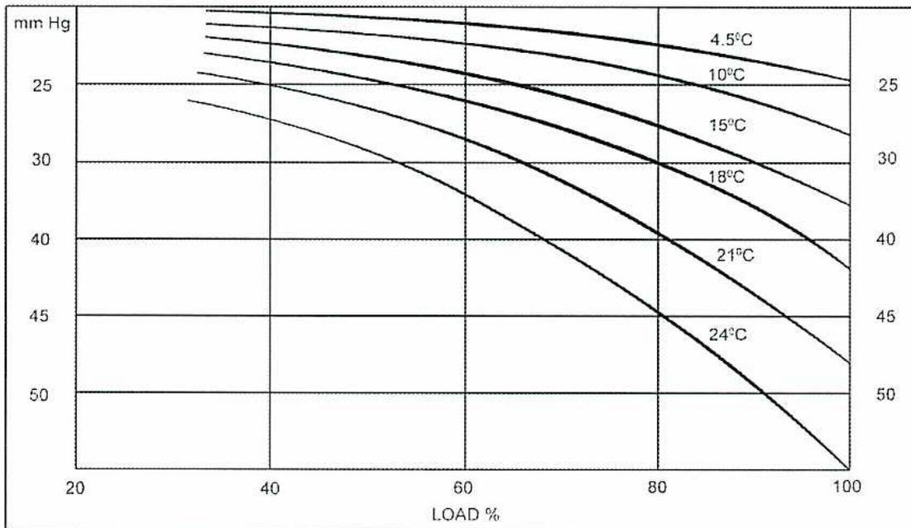
| LOAD % | 4.5°C (mm Hg) | 10°C (mm Hg) | 15°C (mm Hg) | 18°C (mm Hg) | 21°C (mm Hg) | 24°C (mm Hg) |
|---|---|---|---|---|---|---|
| 20 | 24 | 25 | 26 | 27 | 28 | 29 |
| 40 | 23 | 24 | 25 | 26 | 27 | 28 |
| 60 | 22 | 23 | 24 | 25 | 26 | 27 |
| 80 | 21 | 22 | 23 | 24 | 25 | 26 |
| 100 | 20 | 21 | 22 | 23 | 24 | 25 |
Figure 17
Condenser "Loss of Vacuum" Record
Calculate condenser thermal efficiency from the test data.
A condenser is a heat exchanger. Heat is taken from the entering steam, transferred to the circulating, or cooling water, and then rejected to an outside heat sink. A heat balance is used to show the condenser operation as follows:
$$ \text{heat in} = \text{heat out} $$
The “heat in” is the heat given up by the condensing steam. The “heat out” is the heat carried away by the cooling water (c.w.), neglecting losses.
Using a time basis of 1 hour, the heat balance can be written as:
$$ \text{Heat release/kg of steam} \times \text{kg of steam flow/hr} = \text{Heat gained/kg of CW} \times \text{kg of CW flow/hr} $$
$$ Q, \text{ kJ/hr} = 4.186 \times \Delta T \times CW, \text{ kJ/hr} $$
where \( Q \) = Heat input, kJ/hr
\( \Delta T \) = Temperature rise of CW, °C
\( CW \) = Rate of flow of cooling water, kg/hr
4.186 = Specific heat capacity of water, kJ/kgK
This heat input, \( Q \) , kJ/hr, passes through the condenser tubes and is dependent upon the:
Certain average figures arise from past practical experience in condenser operation. For example, the heat rejected (released) per kg of steam to the condenser by a turbine is 2200 kJ/kg, and by a reciprocating engine is 2320 kJ/kg. An average steam loading on a condenser is about 3.5 kg steam/h/m 2 of tube surface area. The temperature rise of the cooling water from inlet to outlet is about 8 to 11°C.
The efficiency of any operation is given by the relationship of:
$$ \frac{\text{Output}}{\text{Input}} $$
In the case of a heat engine, output is the work done by the engine, and input is the heat supplied during the cycle, thus:
$$ \text{Thermal Efficiency} = \frac{\text{Work Done}}{\text{Heat Supplied}} $$
Studies on heat engines show that the maximum amount of work that can be done by any heat engine is the difference between the heat supplied and the heat rejected (enthalpy of steam after expansion) in the cycle:
$$ \text{Thermal Efficiency} = \frac{\text{Heat Supplied} - \text{Heat Rejected}}{\text{Heat Supplied}} $$
In a condenser, the heat supplied is the amount of heat in the steam entering the condenser. The heat rejected is the amount of heat energy left in the steam condensate leaving the condenser.
The actual work done in a condenser is the amount of heat removed from each kg of steam entering the condenser, as it is condensed back to a liquid. Thus the work done is found by subtracting the heat content of the condensate from the heat content of the steam entering the condenser. This is the heat that the cooling water absorbs.
Note that the heat removed from each kg of steam is removed at constant pressure which is based on the Rankine Cycle which states that heat must be removed at constant pressure.
Therefore, for a condenser:
$$ \begin{aligned}\text{Thermal Efficiency} &= \frac{\text{Heat in steam exhaust} - \text{Heat in condensate}}{\text{Heat in steam exhaust}} \\ &= \frac{\text{Enthalpy of steam exhaust} - \text{Enthalpy of condensate}}{\text{Enthalpy of steam exhaust}}\end{aligned} $$
Where \( H_g \) = Enthalpy of steam exhaust
\( H_f \) = Enthalpy of condensate
$$ \text{Thermal Efficiency} = \frac{H_g - H_f}{H_g} $$
A new condenser is designed to receive 21 000 kg/h of dry exhaust steam from a turbine. The condenser pressure is designed to be 5 kPa absolute. Calculate the design thermal efficiency of the new condenser.
In this example, any efficiency losses due to air leakage or sub-cooling of the condensate will not be a factor.
$$ \begin{aligned}\text{Condenser Thermal Efficiency} &= \frac{H_g - H_f}{H_g} \\ H_g &= 2561.5 \text{ kJ/kg} \\ H_f &= 137.82 \text{ kJ/kg} \\ \text{Condenser Thermal Efficiency} &= \frac{2561.5 \text{ kJ/kg} - 137.8 \text{ kJ/kg}}{2561.5 \text{ kJ/kg}} \\ &= \mathbf{94.60\% \text{ (Ans.)}}\end{aligned} $$
Note: This is under ideal conditions and with new and clean condenser tubes.
After a year in operation the condenser in Example 1 is receiving 21 000 kg/h of steam at 7.5 kPa (40.29°C), and the temperature of the condensate leaving the condenser is 35°C. Calculate the new thermal efficiency of the condenser.
$$ \begin{aligned}\text{Condenser Thermal Efficiency} &= \frac{H_g - H_f}{H_g} \\ H_g &= 2574.80 \text{ kJ/kg} \\ H_f &= 146.68 \text{ kJ/kg} \\ \text{Condenser Thermal Efficiency} &= \frac{2574.80 - 146.68}{2574.80} \\ \text{Condenser Thermal Efficiency} &= \frac{2428.12}{2574.80} \\ \text{Condenser Thermal Efficiency} &= 0.9430 \\ \text{Condenser Thermal Efficiency} &= \mathbf{94.30\% \text{ (Ans.)}}\end{aligned} $$
As seen in the examples, a change of only a few degrees can make a difference to the thermal efficiency on the condenser. If this decline in thermal efficiency is allowed to continue, it will have a significant effect on the operation of the turbine.
Explain the procedures used to troubleshoot condenser performance.
To properly observe the performance of a condenser, the operating parameters must be monitored. The required readings or parameters used to determine condenser performance are the:
These readings are compared with the original readings taken when the condenser was first put into service. When the condenser is new, the temperature of the steam exhaust, the condensate, and the cooling water outlet are relatively close. A graph (like the one in Fig. 17 – Objective 3) is developed to show the reduction of the condenser vacuum. Comparisons of these various readings indicate whether the performance of the condenser is deteriorating. In order to troubleshoot condenser performance issues, the following four items are examined:
A comparison of the temperature differential or difference between the exhaust steam temperature and the cooling water outlet is called the condenser terminal difference and this figure is sometimes used as a guide to condenser fouling.
The most frequent cause of low vacuum is slime and mud on the waterside of the tubes. This acts as an insulator and slows down the rate of heat transfer from steam to circulating water. Increased partial pressure due to uncondensed steam adversely affects the vacuum and the temperature at turbine exhaust rises. The temperature of the condensate also rises because the vacuum has dropped. There is no sub-cooling of the condensate because the heat cannot be transmitted through the condenser tubes.
In this case, both the steam exhaust and condensate temperatures rise above normal operating conditions and the cooling water outlet temperature is low.
Increased air leakage into the condenser vacuum creates a widening difference between the temperature of the exhaust steam and the temperature of the condensate. Another way to determine if there is an increase in air infiltrating the condenser is to compare the readings taken from the air flow meter. Faulty air extraction also compounds the problem of air leakage.
A lack of sufficient cooling water reduces the vacuum. If the cooling water system has a flow meter and accumulator, the amount of cooling water flow can be determined for a given period of time. If the amount of cooling water flow is lower than usual, the reason for the reduced flow must be resolved. If the normal pump motor amperes are known, a drop in load on the pump monitor may indicate the reduced flow. An increase in the temperature differential between the cooling water in and out temperatures also indicates reduced flow. If the tubes are clean, the heat transfer rate is normal, and then the reduced quantity of cooling water is raised to a higher temperature.
Explain the procedures used to backwash and clean a condenser.
Provisions are sometimes made for on-line cleaning of large condensers which are subject to fouling with algae and other residual matter. The waterboxes are divided into two halves. Inlet and outlet circulating water valves are provided for each section so that one-half of the condenser can be cleaned at one time. In some locations, sudden severe surges of waste material might occur in the water used for cooling. This material may lodge in the tube ends and block the flow of circulating water. In these cases, a reverse flow or backwash system is advantageous.
Fig. 18 shows an example of a reverse flow type of design. The inlet and outlet valve chambers A and D are provided with changeover valves. Referring to the left side of the condenser in Fig. 18, water enters the divided water box at valve chamber A with the left port open. The water flows through pass B to end of the condenser, back through pass C, and out through upper port of D.
To backwash the condenser, flow is then reversed on the right side. Valves at inlet A and discharge D are changed to permit water to flow through C and then back through B in the opposite direction. It then exits the condenser through the lower port of D. With this type of arrangement, one-half of the condenser can be backwashed while the other half is in service.
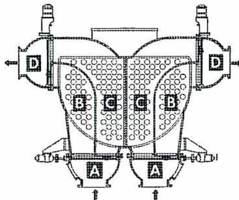
Figure 18
C.H. Wheeler Reverse Flow Dual Bank" Condenser
Fig. 19(a) shows the condenser in normal operation. Fig. 19(b) shows the first half being backwashed while Fig. 19(c) shows backwashing of the second half. This design has dual inlet and outlet valves, and there are butterfly type valves in the water-box division plates which are used to backwash the condenser. With this design, the entire condenser has to be shutdown in order to be backwashed.
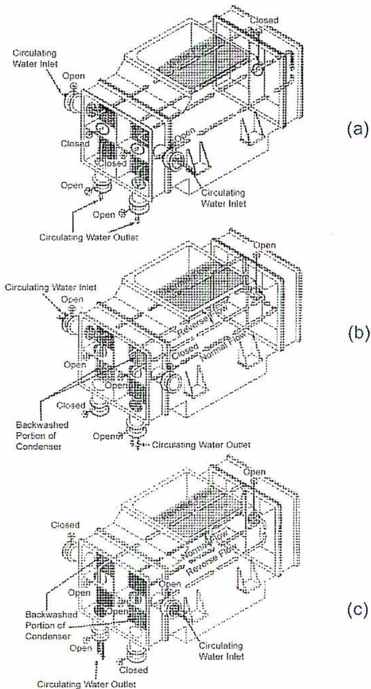
The figure consists of three 3D perspective views of a condenser, labeled (a), (b), and (c), illustrating different valve settings for operation and backwashing.
Labels in the diagrams include 'Circulating Water Inlet', 'Circulating Water Outlet', 'Open', 'Closed', 'Normal Flow', 'Reverse Flow', and 'Backwashed Portion of Condenser'.
Figure 19
Backwashing Allis-Chalmers Condenser
Describe the purpose, principle and design of air ejectors and vacuum pumps.
The pressure within a condenser shell is well below that of the surrounding atmosphere and this induces atmospheric leakage through glands, valves, flanges and joints. Other noncondensable gases like oxygen and carbon dioxide may be carried with the steam from the boilers although modern feedwater treatment has reduced these to a minimum. All these gases are poor heat conductors and, if allowed to accumulate, soon blanket the condenser tube surfaces. Steam-jet air ejectors and vacuum pumps are used to remove the air and other gases that accumulate in the condenser.
Fig. 20 shows sectional of a single-stage ejector. High-pressure steam delivered to the steam nozzle passes into the air chamber with high velocity and produces an area of low pressure in its wake. Air and other gaseous vapours, drawn from the condenser into this low-pressure area, become entrained in the jet of steam and are carried through the diffuser to the discharge.
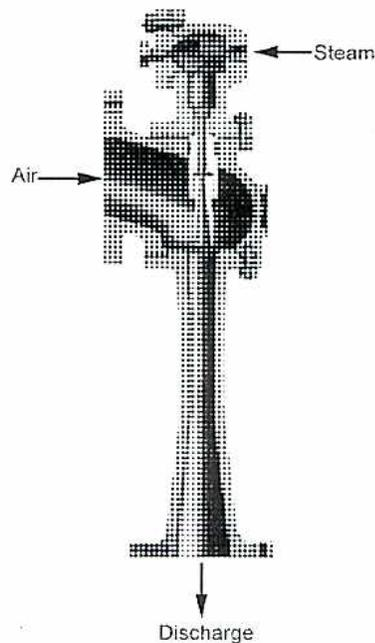
A schematic diagram of a single-stage ejector. At the top, a nozzle is shown with an arrow labeled 'Steam' pointing into it. The nozzle leads into a larger chamber. On the left side of this chamber, an arrow labeled 'Air' points into the chamber. The chamber narrows into a long, vertical tube. At the bottom of this tube, an arrow points downwards, labeled 'Discharge'.
Figure 20
Sectional View of Ejector
Fig. 21 shows the piping layout for a single-element two-stage steam-jet air ejector with jet inter-condensers attached to a surface condenser. Note that the air extraction is taken from beneath a baffle plate in the condenser steam space. This allows air to collect in a shielded area where condensing steam does not heat the incoming cooling water. The air is reduced in volume as much as possible to improve the effectiveness of the ejection equipment. The ejector uses condensate from the main condenser in the intercooler. The condensate from the intercooler is led back through a water leg to the main condenser.
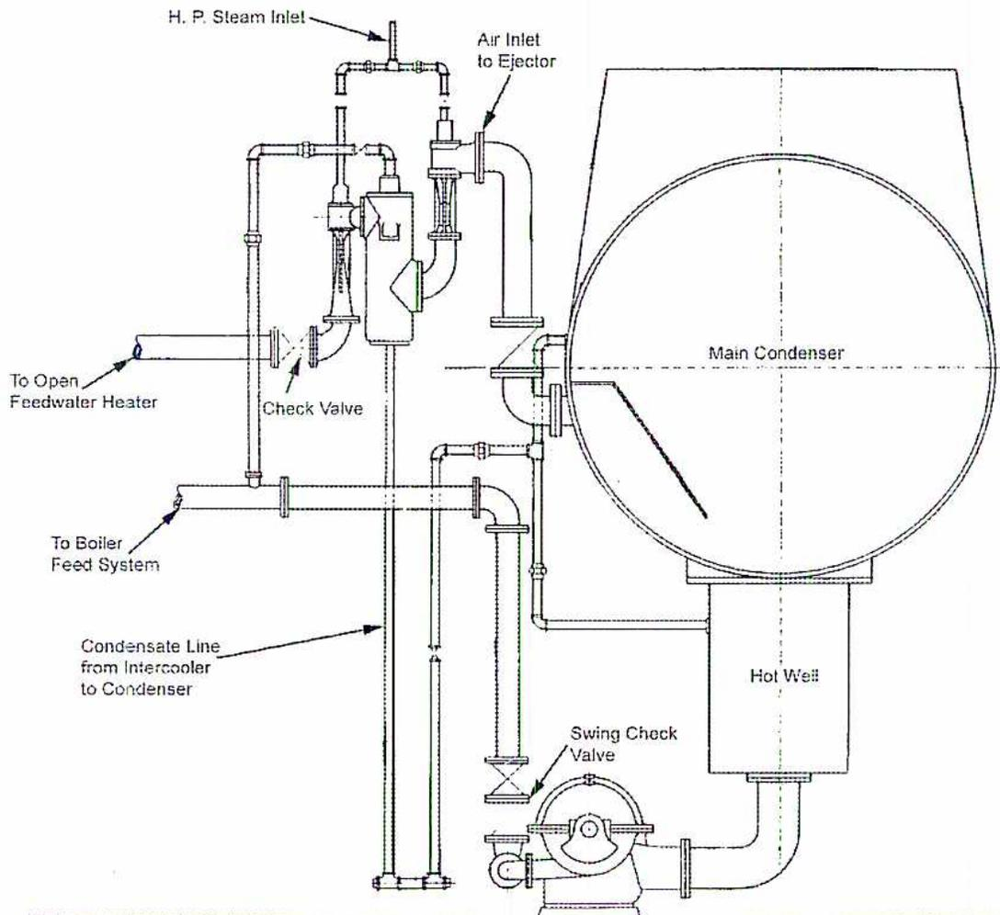
The diagram illustrates the piping arrangement for a single-element two-stage steam-jet air ejector. On the right, a large circle represents the 'Main Condenser', which sits atop a rectangular 'Hot Well'. A pipe connects the Hot Well to a 'Swing Check Valve' and then to a pump. From the pump, a pipe extends vertically upwards. To the left of this pipe, a 'Condensate Line from Intercooler to Condenser' is shown. Above the pump, the piping system includes a 'Check Valve' and a connection 'To Boiler Feed System'. Further up, another connection is labeled 'To Open Feedwater Heater'. At the top left, the 'H. P. Steam Inlet' enters the system. An 'Air Inlet to Ejector' is shown on the right side of the upper piping assembly. The entire system is interconnected by a complex network of pipes and valves.
Figure 21
Single-Element Two-Stage Steam-Jet Air Ejector
Fig. 22 shows a sectional view of a two-stage steam-jet air ejector with separate surface intercondensers and aftercondensers. The air is vented off to atmosphere from the aftercooler where the pressure is slightly above atmospheric.
![Schematic diagram of a Two-Stage Steam-Jet Air Ejector. The diagram shows a complex piping system with two ejector stages. Steam enters from the top, passing through a strainer and then into the 'Steam Nozzle First Stage'. This stage has an 'Air Suction' inlet and is connected to a '710 mm HG Vac' line. The output of the first stage goes to an 'Inter-Cooler 660 HG Vac', which has an 'AIR VENT'. The output of the inter-cooler then goes to a 'Steam Nozzle Second Stage', which is connected to an 'AFTER-COOLER 0 TO 4 kPa'. The final output is shown at the bottom left.](fc46871d72c65d3381d9201646d23439_img.jpg)
Figure 22
Two-Stage Steam-Jet Air Ejector
The number of stages used depends upon the pressure required. Generally, single-stage air-ejectors are used to about 10 kPa, two-stage to 4 kPa, and three-stage below 4kPa. Two-stage air-ejectors are the most commonly used. In order to give standby protection, two sets of ejectors are often fitted. Each set has 100% capacity and has isolating valves to allow cleaning of jets or nozzles while the other set is in operation.
The quantity of steam an air ejector uses depends upon the quantity of air that it is required to remove and this depends on the size of condenser used. Air, in passing through the condenser, becomes saturated with water vapour in the ratio of approximately 30% air to 70% vapour. The ejector capacity must be sufficient to handle this air-vapour mixture.
Noncondensible gases can also be removed from surface condensers by vacuum pumps (Fig. 23). A vacuum pump consists of an impeller mounted eccentrically in a round casing. The casing is partly filled with the seal liquid, which is usually water. The impeller rotates and the liquid is thrown by centrifugal force to form a liquid ring which is concentric with the pump casing. The cells formed by the impeller vary in size as the impeller rotates. The cells are large near the inlet port and small near the outlet. This difference in size causes the vapours to be compressed as they pass through the pump.
The liquid ring also serves to carry away the heat from compression and from friction. This is another reason for the constant supply of seal water to the pump. The seal water is often cooled in a heat exchanger before entering the pump.
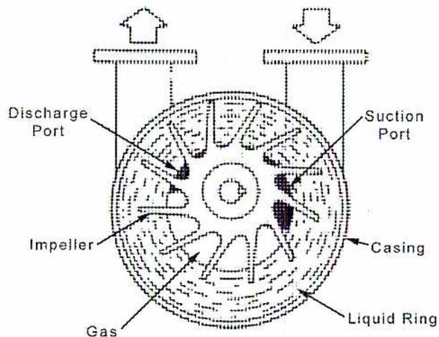
Figure 23
Liquid Ring Vacuum Pump
These pumps can be used instead of ejectors or in addition to ejectors. A liquid ring vacuum pump system is shown in Fig. 24. Sealing water is supplied to the vacuum pump via a seal water cooler. Gases are pumped out to a vent separator which knocks out any entrained seal water for reuse. Some of the seal water vaporizes and is carried out the discharge. The amount of water vaporizing increases as the vacuum increases. This is one of the limitations of vacuum pumps.
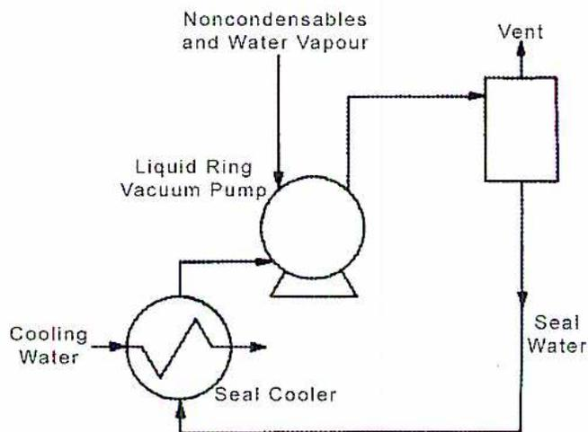
Figure 24
Liquid Ring Pump Vacuum System
Describe the purpose and flow of cooling water systems.
The purpose of the cooling water system is to condense the exhaust steam entering the condenser from the steam turbine or steam engine and to remove this exhaust heat from the condenser and deposit it in a heat sink. The heat sink may be a river, lake, cooling pond, or a cooling tower.
The cooling water, circulated through the condenser, may come from a river, lake, or an estuary. In these cases, the cooling water makes one pass through the cooling water system and then it is discharged back into the lake or river. The fresh supply of cooling water is taken from another part of the lake or river. This type of cooling water system is the most economical to build and operate provided the water supply is adequate to supply the cooling water requirements of the operation.
If the supply of cooling water is limited, it is circulated through a closed system which provides some means of cooling the water after leaving the condenser. The methods used to cool the water are cooling ponds or cooling towers. With this type of system, the only water required from a nearby river or lake, is makeup water, to make up for losses due to evaporation, leaks in the cooling water system and blowdown losses.
If a cooling pond is used, then the water is pumped from the cooling pond through the condenser and back out to the pond. If the pond is not large enough to adequately cool the water, water sprays are installed in the pond or in the canal leading to the pond. The design of the cooling ponds will be discussed later in this module.
If a cooling tower is used, the water is pumped from the basin of the cooling tower through the condenser and back to the cooling tower.
Describe the purpose, principle and design of cooling water intake screens, circulating pumps, cooling towers, and cooling ponds.
The purpose of the cooling water intake screens is to prevent foreign material such as rocks, pieces of wood, weeds, or anything else that can damage the cooling water pumps from getting into the pumps. Another reason for intake screens is to prevent foreign material from which can plug up or damage the condenser tubes.
The cooling water intake screen is designed to provide adequate screening of the cooling water with a minimum pressure drop across the screen when the cooling water flow is at maximum rates. The screen also prevents turbulent flow to the suction of the pump, even if the intake screen becomes partially plugged with foreign material. The mesh size is usually 3 mm to 12 mm. There are various types of cooling water intake screens in use. The following two types will be discussed in this lecture:
A belt type of travelling screen is shown in Fig. 25. The screen has a number of panels joined together in the form of a belt. This belt screen is attached to a sprocket at each end, and the top sprocket is the driver. The debris is collected on the ascending screen panels. These panels move through an area above the operating floor where water jets remove the debris collected from the cooling water and deposit it into collection troughs. The clean panels then move downwards through the screened effluent going to the pumps and back up through the incoming water.
The disadvantage of this screen is carry-over of debris to the pump side of the screen. As the filtered water flows backward through the descending panels on the pump side of the screen, it may dislodge any debris the water jets have not removed from the filtering panels. The debris then flows downstream to the pumps and condensers which can cause damage to this equipment.
Figure 25
Travelling Screen (US Filter)
A picture of the dual-flow filter is shown in Fig. 26.
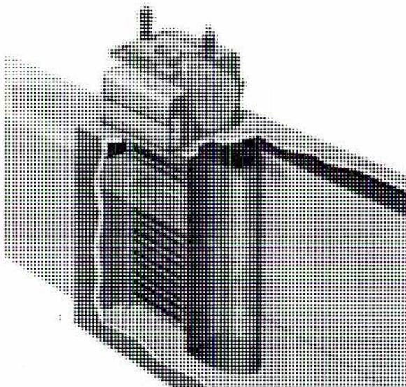
Figure 26
Travelling Screen Dual-Flow (US Filter)
This is also a belt type of screen. The influent water flow goes through both the ascending and descending panels, and the screened effluent exits from the centre of the screen. Therefore, only clean screened water is allowed to flow downstream to the pump. The water jets used to clean the debris from the panels are above the operating floor which is similar to the through-flow design.
The advantages of dual-flow screen over the through-flow screen are:
The government regulates the design and construction of cooling water intake structures to minimize any adverse environmental impact. A major goal of these regulations is to minimize the impingement and entrainment of fish and other aquatic organisms as they are drawn into a facility's cooling water intake.
Impingement occurs when fish and other aquatic life are trapped against cooling water intake screens.
Entrainment occurs when aquatic organisms, eggs, and larvae are drawn into a cooling water system, through the heat exchanger, and pumped back out.
Impingement and entrainment are minimized in the following ways:
The purpose of the circulating water pumps is to circulate the cooling water through the cooling water system and the condenser. After passing through the heat exchangers, the water is returned to the river, cooling pond or a cooling tower.
The type of pump commonly used for circulating water service is the vertical mixed flow pump, which is illustrated in Fig. 27. It is called a mixed flow pump because it obtains its pumping action from a mixture of centrifugal force and the lifting effect of the impeller vanes. The vertical design removes the need for pump priming as the impeller is submerged. These pumps operate at a low speed, usually 320 to 450 rev/min.
In some applications, horizontal rather than vertical pumps are used. They are also centrifugal pumps usually of the single-stage volute type.
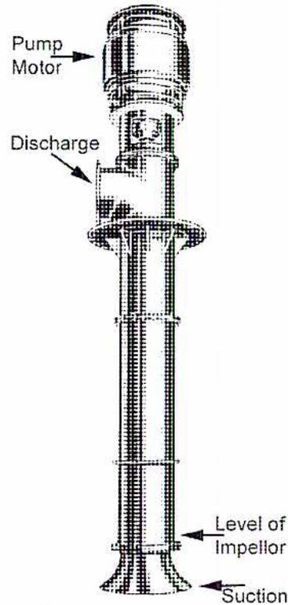
Figure 27
Vertical Mixed Flow Circulating Water Pump
(Allis –Chalmers)
When the availability of cooling water is restricted, the water is circulated through the system, using some form of cooling after it leaves the condenser. A cooling pond or cooling tower is the two most common means of cooling the circulating water. The cooling tower is the more compact way of cooling the circulating water, and it can cool large quantities of water.
The principle of cooling remains the same whether rivers or cooling towers are employed, that is, the heat is given up to the atmosphere. In rivers, cooling takes place from the flat surface of the water which may extend for many miles. In a tower, the water surface exposed to the atmosphere has to be artificially increased to accomplish the heat transfer. Two methods used in a cooling tower are:
Splash cooling breaks the water into small drops in the cooling tower. To illustrate this principle, consider a section of water in a river 10 m long by 10 m wide by 1 m deep. Its volume then is \( 100 \text{ m}^3 \) . The heat contained in such a body of water is proportional to its mass and hence its volume. Heat exchange takes place from the surface area of \( 100 \text{ m}^2 \) . If this \( 100 \text{ m}^3 \) of water is divided into spheres of 250 mm diameter so that the air could make contact over the whole area of each sphere, the total volume and heat quantity remain the same, but the surface area available for heat transfer is increased to \( 2700 \text{ m}^2 \) , that is, 27 times as much. If the water is divided into 60 mm diameter spheres, the surface area is \( 10\,800 \text{ m}^2 \) , 108 times that of the flat surface.
Film cooling also increases the water surface area. Water is induced to flow in a film or sheet down the sides of a series of boards set with their long axis horizontal and arranged in layers or banks. Each bank of boards is set at right angles to the one vertically below it. This method reduces the “drift” loss, that is, that quantity of water that the velocity of the air stream carries out of the tower. The splash cooling systems employ “drift eliminators” to minimize this problem. These are baffles arrangements built across the fill outlet. They serve to trap and return the escaping water droplets.
The great majority of the heat transfer takes place at the water surface, regardless of whether this has been produced by a splash or a film method. It takes place through evaporation of a part of the water into the surrounding air. This is the principle used in evaporative cooling. A small amount of cooling also takes place by heat transfer to the air.
The ability of air to evaporate water in contact with it depends upon its relative humidity. Relative humidity is the ratio of the quantity of water vapour actually present in \( \text{m}^3 \) of air to the maximum amount of vapour the air can hold at that temperature.
When the relative humidity is 100% the air cannot hold any more water and is said to be saturated. But when the relative humidity is less than 100%, water evaporates and heat is carried away in the water vapour. This heat is the latent heat of vaporization.
When 1 kg of water is evaporated, it takes away approximately 2300 kJ of latent heat. The air removing the latent heat causes the cooling effect which making possible the cooling of the water in the tower to a temperature just a few degrees above the wet bulb ambient temperature.
Using the 2300 kJ/kg latent heat and referring to 1 kg of water, it can be seen that evaporating 1% (by mass) of the water reduces its temperature by \( 5.5^\circ\text{C} \) or
$$ \frac{1}{100} \text{ kg} \times 2300 \text{ kJ/kg} = 1 \text{ kg} \times 4.183 \text{ kJ/kg}^\circ\text{C} \times 5.5^\circ\text{C} $$
In all cooling towers, the water supply is introduced at or near the top, and it falls by gravity over the fill into the water reservoir at the bottom. The fill consists of some arrangement of splash bars, generally constructed of redwood, pressure treated Douglas fir, or PVC. The fill is designed to cause the falling water to break into droplets or to run across the fill in a film to achieve the maximum water surface area to the air.
Cooling towers are classified according to the method of passing the air over the water to be cooled. There are two main classifications of cooling towers:
This open or atmospheric type has walls constructed of wooden louvers or slats laid horizontally along the length of the walls and angled so that the air enters the tower in a downward direction. This reduces the tendency to lift the fine water spray out of the top of the tower and gives a better distribution of cooling air across the tower. The movement of air is dependent upon natural convection currents.
One type of natural draft tower is the hyperbolic tower, as shown in Fig. 28. This model of cooling tower is made of reinforced concrete and is built in sizes up to 25 000 m 3 /h. It stands 90 meters high and has a 60 m base diameter. The air inlet, water distribution, and fill are similar to a mechanical draft tower and fit in the bottom section of the tower. The majority of the height of the hyperbolic tower is the stack or chimney.
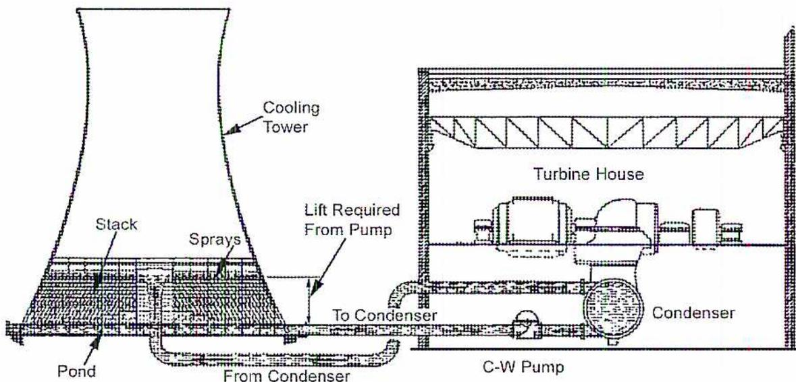
The diagram illustrates a hyperbolic cooling tower system. On the left, a tall hyperbolic tower is shown, with a 'Stack' at its base. Water from a 'Pond' is pumped into the tower through 'Sprays'. The tower is labeled 'Cooling Tower'. On the right, a cross-section of the 'Turbine House' is shown, containing a 'Condenser' and a 'C-W Pump'. The 'C-W Pump' is connected to the 'Pond' and the 'Cooling Tower'. The 'Condenser' is connected to the 'Turbine House' and the 'C-W Pump'. The 'To Condenser' line is also shown. The 'Lift Required From Pump' is indicated by an arrow pointing upwards from the 'Pond' to the 'Cooling Tower'.
Figure 28
Hyperbolic Cooling Tower System
Natural draft towers are efficient and their maintenance and operating costs are minimal as they require no fans. However, they are dependent upon local atmospheric conditions and consequently mechanical draft towers are chosen for many plants.
Advantages of mechanical draft towers over the natural draft type are:
Disadvantages of mechanical draft towers over the natural draft type are:
Extra complication of the fans
Power and maintenance associated with the fans
Mechanical draft towers are constructed using either:
A forced draft cooling tower (Fig. 29) includes a fan placed at the bottom of the tower to draw air from the surrounding atmosphere and force it upwards across the fill counterflow to the falling water.
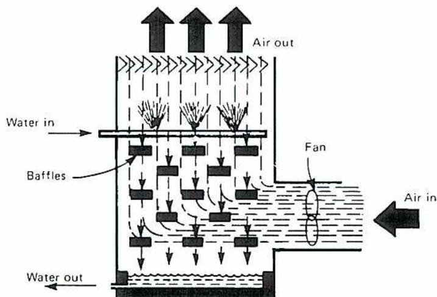
The diagram illustrates a forced draft cooling tower. At the bottom right, a large arrow labeled 'Air in' points into the tower, passing through a 'Fan'. The air then moves upwards through a series of horizontal 'Baffles' and spray nozzles. 'Water in' enters from the left and is distributed by these nozzles, falling counterflow to the upward air. At the top, three large arrows labeled 'Air out' exit the tower. At the bottom left, an arrow labeled 'Water out' exits the tower.
Figure 29
Forced Draft Cooling Tower
The induced draft method is the most widely used. Its main advantages over the forced draft system are:
Disadvantages of the induced system are:
Fig. 30 shows a counterflow mechanical induced draft tower. The fan at the top produces induced draft. The cooling air enters at the side and flows across and up the tower and out the stack in cross-flow design. The hot water enters at the top and falls down through the fill to collect in the tower basin.
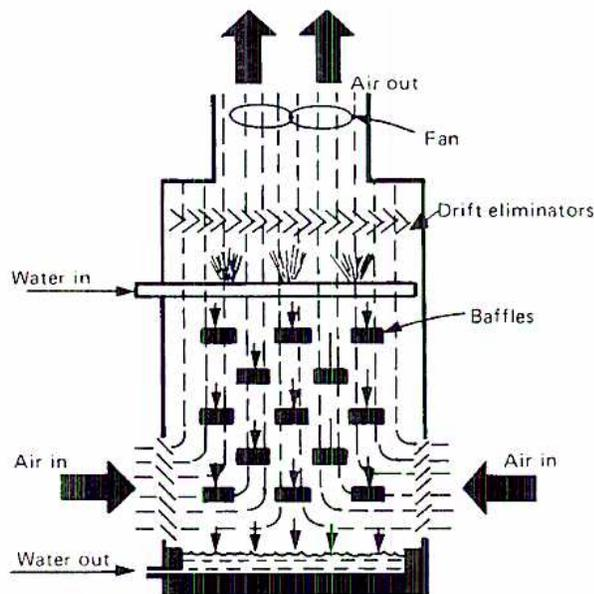
The diagram illustrates the internal structure and airflow of a mechanical draft tower. At the top, two large upward-pointing arrows represent 'Air out' exiting through a stack. Below the stack is a 'Fan' unit. Directly beneath the fan are 'Drift eliminators', shown as a series of chevron-shaped arrows. Below the drift eliminators, 'Water in' enters from the left through a distribution pipe with downward-pointing nozzles. The water falls through a series of 'Baffles', which are horizontal rectangular blocks arranged in a staggered pattern. 'Air in' enters from both the left and right sides at the bottom of the tower. The air flows upward through the tower, passing through the baffles and the falling water. At the bottom of the tower, 'Water out' exits through a pipe on the left side. The entire tower is enclosed in a rectangular frame.
Figure 30
Mechanical Draft Tower
Another type of cooling tower which finds application in areas where cooling supplies are very restricted is the dry tower. They enclose the cooling water in tubing instead of spraying it into the air space as in the normal or evaporative type of tower. The tubes used are finned aluminium to give maximum surface area. They are placed in the tower in banks and mechanical or natural air currents cool them. Water lost through evaporation and drift is eliminated and the system only has to make up losses due to leakage in the system. An example is shown in Fig. 31.
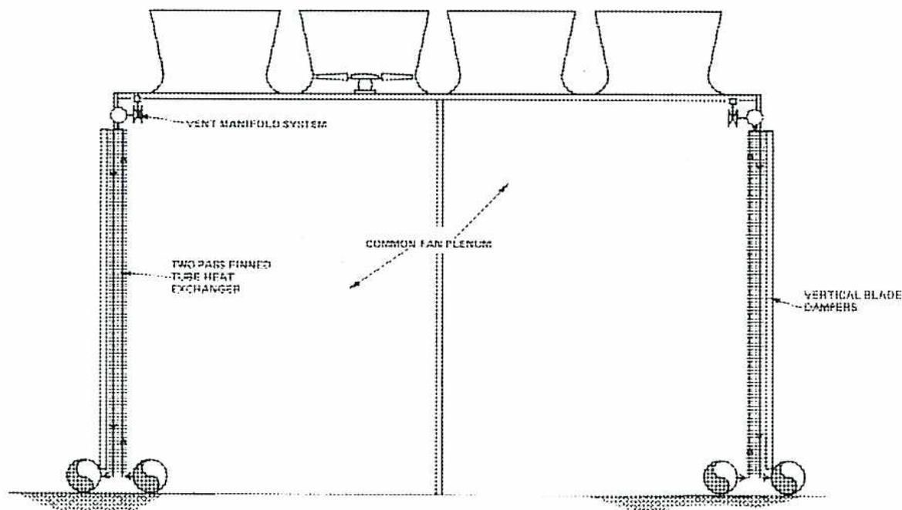
The diagram illustrates the internal structure of a Marley Dry Cooling Tower. It features a large rectangular frame with four vertical columns. At the top, there are four intake hoods. Below them, a 'VENT MANIFOLD SYSTEM' is indicated. The central area is labeled 'COMMON FAN PLENUM'. On the left side, there are 'TWO PASS FINNED TUBE HEAT EXCHANGER' units. On the right side, 'VERTICAL BLADE DAMPERS' are shown. At the base of the tower, there are two circular fans. The entire structure is supported by a foundation.
Figure 31
Marley Dry Cooling Tower
The materials used in cooling tower construction are chosen mainly for strength and resistance to corrosion. Douglas fir and Redwood are generally chosen though other woods such as cypress and pine can be used. Commonly used materials are fibreglass composites for the walls and supports and fibre glass boarding for wall covering. Fill and mist eliminators are constructed of treated slats of Douglas fir or PVC. Where structural steel is used, galvanizing protects it. Hardware such as bolts and nails are made of stainless steel. The fan blades are made of stainless steel, aluminium, or fibre glass.
Chemical attack and rotting (a biological attack) causes deterioration of wood used in cooling towers with high operating temperatures accelerating the process. For protection, the wood is pressure treated with creosote or chromated copper arsenate and the circulating water is chemically treated.
The purpose of a cooling pond is the same as that of the cooling tower – to provide a means of cooling the circulating water.
The primary heat transfer mechanism in a cooling pond is evaporation. As with a cooling tower, the ability of the air to remove the latent heat of vaporization depends on the relative humidity of the air. However, because the cooling water cannot be broken up into small droplets or into a film or sheet, the vaporization takes place on the surface of the water. To achieve maximum evaporative cooling, the warm and cold layers of water in the pond are mixed vertically. If this is not done, layers of cold and warm water (thermoclines) form. This causes horizontal layered flow which restricts the movement of the warmer water to the surface for evaporation and cooling (short-circuiting). The end result of this is that only a portion of the pond's cooling capacity is used.
During warm weather (ambient temperatures higher than water temperatures) a properly functioning cooling pond will utilize the soil surrounding the pond as a cooling source. For this to occur, water must be circulated past the pond bottom. Mixing the cooler “bottom” water throughout the water column will reduce the overall pond water temperature. Bernoulli's law dictates that heat transfer will occur with the expansion of air bubbles as they move from an area of high pressure at the bottom of the pond to lower pressure at the top and ultimately atmospheric pressure above the water. The homogenizing of the water is achieved by means of an aerator placed on the bottom of the pond. There are several different types of aerators available. When the pond is constructed, a liner is placed inside the pond, to prevent erosion of the floor and sides of the pond. Fig. 32 shows a picture of a cooling pond at an industrial site.
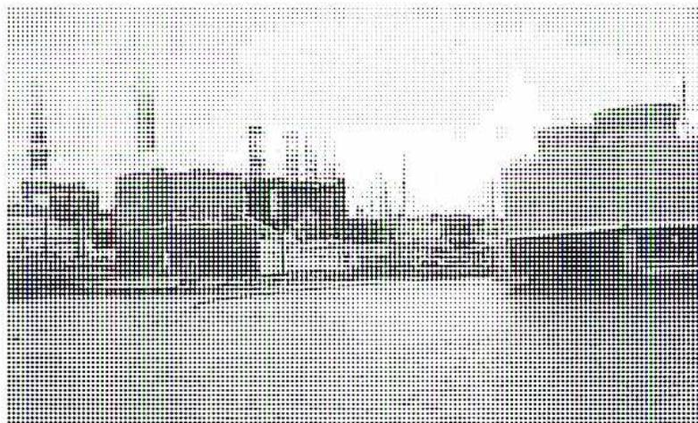
Figure 32
Cooling Pond
Describe the purpose, principle and design of condenser atmospheric exhaust (relief) valves.
Since the condenser is a closed vessel, it is possible for the back pressure to rise until it is above atmospheric pressure. This happens, for example, if the cooling water flow is stopped. The shell is not designed to withstand a pressure from the inside and would soon burst. The atmospheric relief valve is designed to open when the pressure in the condenser rises above atmospheric.
Referring to Fig. 33, under standard conditions, a vacuum holds the atmospheric valve shut. A water seal, supplied with condensate, prevents air from leaking through. When the pressure reaches 7 kPa, the force on the disc area is greater than the water head on the reverse side, thus, the disc lifts relieving the pressure to atmosphere. The valve is usually fitted with a pivoted lever and a chain brought to operating level. Its operation can be checked when the machine is off load and a manual assist can be supplied in the case of failing to open under emergency conditions.
Alternatively, some manufacturers fit rupturing diaphragms to the turbine exhaust piping. These are designed to protect the condenser and low-pressure turbine against overpressure by blowing out and relieving the pressure.
High output turbines are not fitted with atmospheric relief valves which are big enough to release a full load steam volume. Instead, the turbine is equipped with a pressure trip.
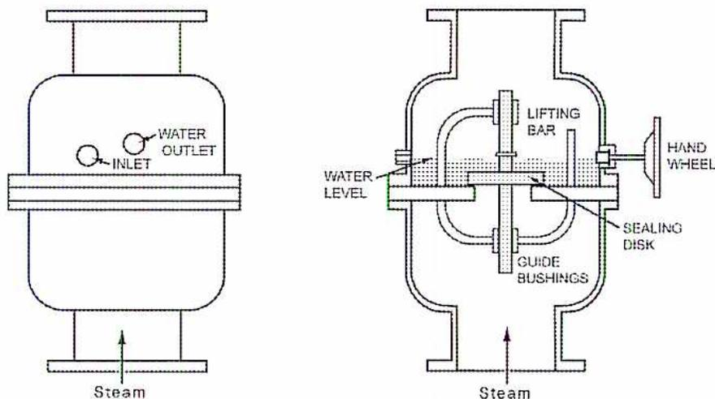
Figure 33
Atmospheric Relief Valve
A condenser pressure trip has a plunger, acted upon by a bellows balanced against a spring. The bellows piece has condenser vacuum inside and atmospheric pressure outside exactly as in the load suppression gear.
Under normal vacuum conditions, the plunger is held retracted against the spring. In the event of loss of vacuum, followed by positive condenser pressure, the plunger extends until it depresses a switch connected to the turbine overall tripping circuit. This is usually arranged to disconnect the load and close the steam valves.
Describe the purpose, principle and design of condensate pumps.
These pumps are used to remove the steam condensate from the condenser and pump it through feedwater heaters and back to the deaerator. Some of the condensate from the discharge of these pumps is also used as a cooling medium for the steam condensers which are part of the air ejector system. Condensate pumps are centrifugal, single, two or three-stage pumps, and may be set with their spindles vertical or horizontal.
These constant speed pumps run with their suction and discharge valves fully open, so that they operate continually at cavitation point. This results in automatic regulation of the flow of the pump to match the steam flow into the condenser. Great care is taken with the sealing of the joints and glands of these pumps to prevent air infiltration and thereby excessive oxygen content in the boiler feed.
Fig. 34 shows an example of a single-stage vertical pump. The gland is sealed with a water supply from the discharge side of the pump. A connection between the suction and the main condenser removes any vapour from the suction chamber which assists in starting, and gives stability under changing load conditions.
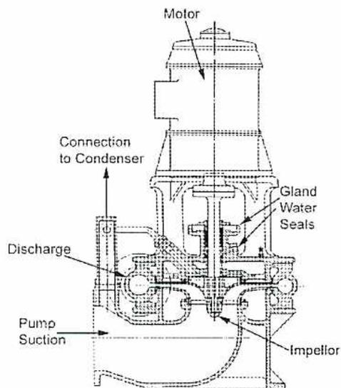
A detailed cross-sectional diagram of a vertical pump assembly. At the top, a 'Motor' is shown driving a central shaft. This shaft extends down through a series of 'Gland Water Seals' to an 'Impellor' at the bottom. The pump casing features a 'Discharge' outlet on the left side and a 'Pump Suction' inlet at the bottom. A 'Connection to Condenser' is indicated by an arrow pointing to a specific part of the casing. The entire assembly is housed within a vertical casing.
Figure 34
Parsons Single-Stage Vertical Pump
The condensate extraction pump shown in Fig. 35 is a multistage design used to develop higher discharge pressures. This type pumps the condensate through the low pressure heaters to the deaerator.
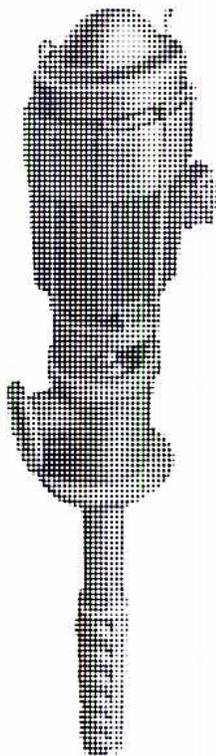
A black and white, halftone-style illustration of a vertical multistage condensate extraction pump. The pump is oriented vertically, with a long, narrow suction pipe at the bottom. The main body of the pump is a vertical cylinder with several distinct sections, representing the multistage design. At the top of the main body, there is a horizontal discharge pipe. The entire unit is shown against a plain white background.
Figure 35
Vertical Multistage Condensate Extraction Pump